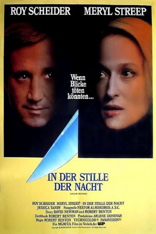
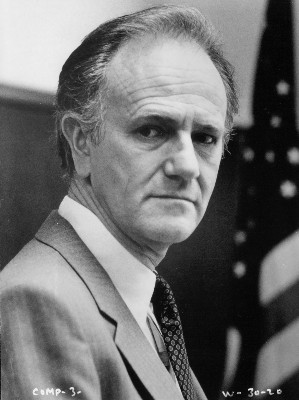
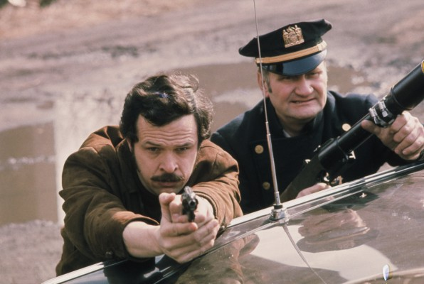

#8766 In der Stille der Nacht
Alternativ: Still of the Night
 
 IMDB-Wertung: 6.1 / 10
IMDB-Wertung: 6.1 / 10  Metascore: 0
Metascore: 0 
Mit der Ruhe im Leben des zurückhaltenden Psychiaters Sam Rice ist es vorbei, als die attraktive Geliebte seines ermordeten Patienten George Bynum bei ihm erscheint, um ihm eine Uhr des Toten zu geben. Obwohl er in den Sitzungen mit Bynum von ihrem mörderischen Vorleben erfahren hatte und auch jetzt so einiges gegen die kühle Frau spricht, verliebt sich Rice in sie. Dabei verheimlicht er nicht nur Indizien vor der Polizei, sondern schlägt auch die Warnungen seiner Mami in den Wind.
Jahr: 1982
Dauer: 85 Minuten
FSK: 16
Land: USA Studio: MGM/UA Entertainment CompanyTonspuren: DD2.0 - ,
Untertitel:
Auflösung: 1080p (1920x1040) Größe: 5027 MB
Genre: Drama, Krimi, Mystery
Regisseur: Robert Benton
Drehbuch: Robert Benton
Soundtrack: John Kander
Darsteller:
 Roy Scheider als Sam Rice
Roy Scheider als Sam Rice Meryl Streep als Brooke Reynolds
Meryl Streep als Brooke Reynolds Jessica Tandy als Grace Rice
Jessica Tandy als Grace Rice Joe Grifasi als Joseph Vitucci
Joe Grifasi als Joseph Vitucci- Sara Botsford als Gail Phillips
-  Josef Sommer als George Bynum
 Larry Joshua als Mugger
Larry Joshua als Mugger- Richmond Hoxie als Mr. Harris
-  Randy Jurgensen als Car Thief
 Mike Tremont als Auction Bidder (uncredited)
Mike Tremont als Auction Bidder (uncredited)- Frederikke Borge als Heather Wilson
- Irving Metzman als Murray Gordon
- Tom Norton als Auctioneer
- Hyon Cho als Mr. Chang
- Danielle Cusson als Girl
- John Bentley als Night Watchman
- George A. Tooks als Elevator Operator
- Sigrunn Omark als Receptionist
- Palmer Deane als Auction Spotter
- William Mayor als Auction Spotter
- Joseph Priestly als Auction Spotter
- Will Rose als Auction Spotter
- Arne Glimcher als Auction Bidder
- Jeffrey Hoffeld als Auction Bidder
- Linda LeRoy Janklow als Auction Bidder
- Elinor Klein als Auction Bidder
- Susan Patricof als Auction Bidder
Datei: X:\1982\In der Stille der Nacht (1982, FSK16, 1920x1040).mkv seit 27.04.2018
Festplatte: HD 1980-1986
 Es gibt insgesamt 31 Filme in der Gruppe '1982'
Es gibt insgesamt 31 Filme in der Gruppe '1982'